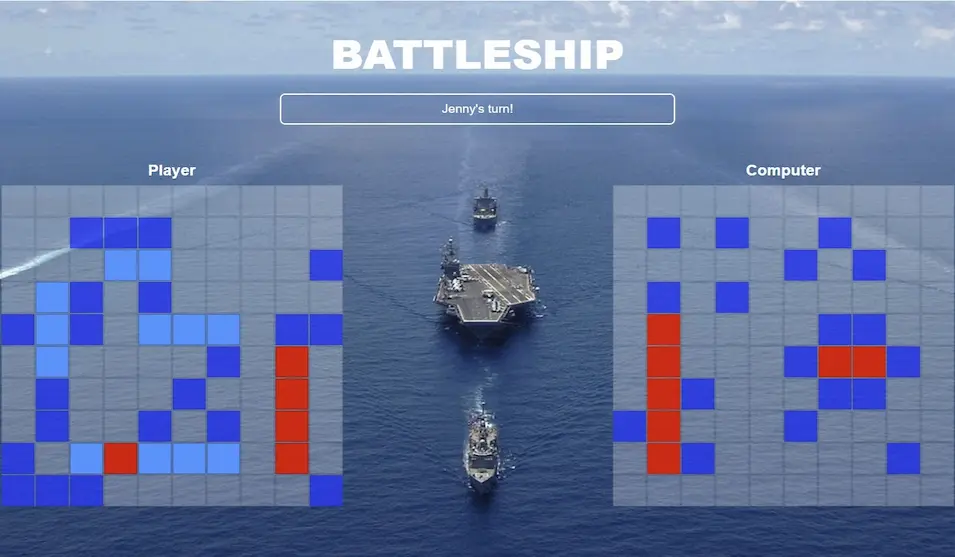

Battleship

Play this simple, classic game against the computer, It's not easy to win!
I'm not actually a real person, but if I was, I would be a fantastic choice for your company. This is an assignment for the Odin Project as part of the advanced HTML and CSS course module, focusing on responsiveness and accessibility.The brief was to make a specific profile page with three distinct layout's for mobile desktop and tablet and have responsive behaviour across all three as well as more advanced accessibility considerations such as screen readers and keybord navigaton. This profile page achieves a 100% accessibility and best practices scores with 98% in performance using lighthouse in chrome dev tools.
Play this simple, classic game against the computer, It's not easy to win!

Whats the weather like in your city? Try the app to see.

This fully functional To-Do list helps you organise tasks and projects,even has dark mode!
This is a Restaurant page using webpack
Time for a break, how about a quick game?.
This is a dashboard project with the focus on using grid and flexbox to create a responsive design layout that works across all screens.